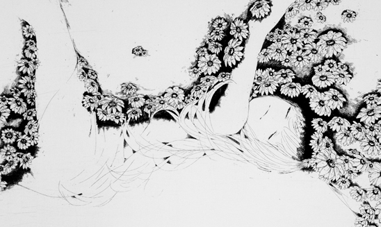
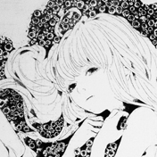
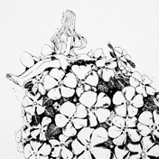
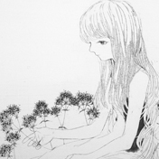

銅版画の腐食技法による記憶の蓄積と
その変化に基づく心象の表現制作
|
ふじばかま 248×295 |
しろつめくさ 265×230 |
ふくじゅうそう 245×305 |
|
にちにちそう 362×217 |

少女と、植物と、銅が「腐る」エッチングの技法に思いをこめて制作しました。
４年間で作ってきたものたちは、わたしの考え方やそれを形成するに至った
環境、生まれ、親、友人、経験、記憶、
嗜好、性癖、執着、身体、くせ、運動神経などの
すべてを反映し、それが楽しくもあり辛くもありました。
それでもこの４年間はわたしにとってかけがえのない時間であり
いつまでもこの価値を失わずに輝き続けるものだと確信しています。
小野 瑞輝
Ono Mizuki
1989年12月 青森県青森市生まれ